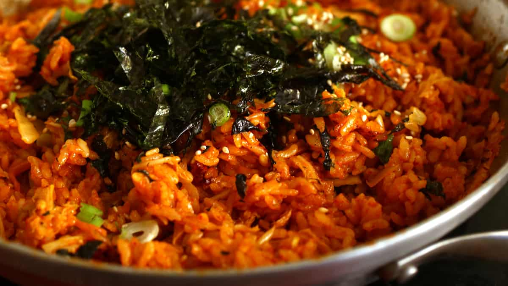

Kimchi Fried Rice

Description
Kimchi fried rice, or kimchi-bokkeum-bap, is a popular dish in South Korea.
It's primarily made with kimchi and rice, along with other available ingredients, such as diced vegetables or meats.
Leftover chilled rice and over-ripened kimchi are usually preferred in preparing kimchi fried rice.
Over-ripened kimchi can also be used for cooking kimchi jigae, as they can produce a richer flavor and texture.
Ingredients
- 3 bowls steamed rice (3 cups)
- 1 cup chopped kimchi (should be aged, well-fermented and sour)
- 1/4 cup kimchi juice (spicy red juice from a jar of kimchi)
- 1/4 cup water
- 2-3 tablespoons gochujang
- 3 teaspoons toasted sesame oil
- 1 teaspoon vegetable oil
- 1 green onion, chopped
- 1 tablespoon roasted sesame seeds
- 1 sheet of gim, roasted and shredded into seaweed strips
Steps
- Heat up a wide, flat pan or skillet. Add vegetable oil.
- Add the kimchi and stir fry for 1 minute over medium-high heat.
- Add rice, kimchi juice, water, and gochujang. Stir all the ingredients together for about 7 minutes with a wooden spoon.
- Add sesame oil and rmeove from the heat.
- Garnish with sprinkled chopped green onion, roasted gim, and sesame seeds. Serve immediately.
Return to main page